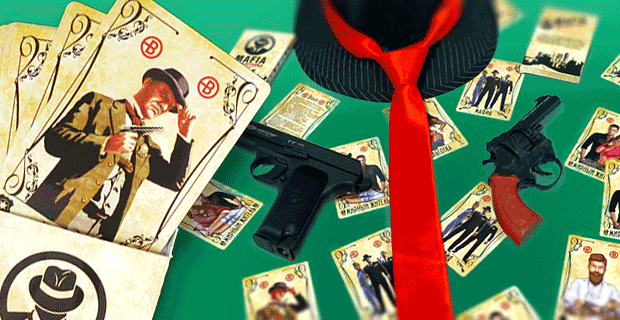

Необходимое для проведения игры |
|
МЕНЮИгровые ролиПравила игрыНеобходимое для проведения игрыГлавная страница |
Если у вас нет специального набора для проведения этой игры, всё необходимое можно соорудить из подручных средств!  Что нужно для игры: 1) - Игральные карты (10 шт. 6 мирных жителей, 1 шериф, 2 мафии, 1 дон) 2) - Маски или павязки на глазах (для того, чтобы игрокт не подсматривали) 3) - Секундомер Как можно сделать всё необходимое из подручных средств? Игральные карты можно нарисовать на бумаге и оклеить эти краты скотчем. Повязки можно сделать из обычных шапок или рук участников. Ну а секундомер есть на каждом телефоне. |